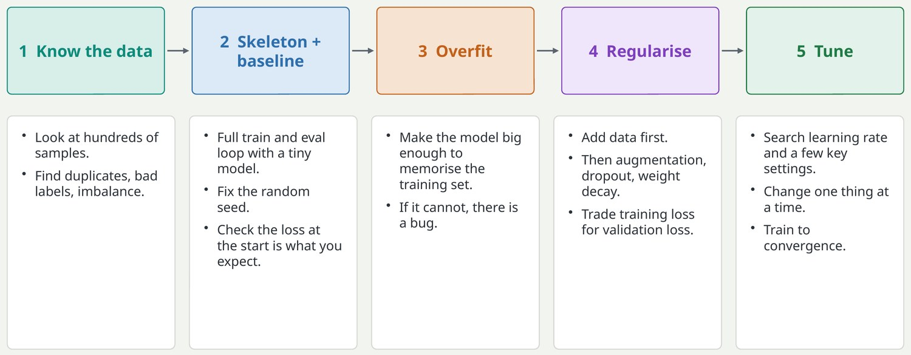
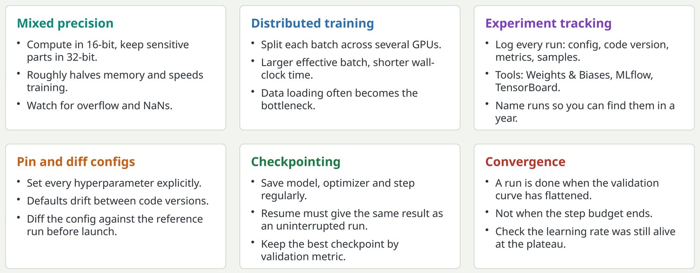

A recipe for training neural networks
Andrej Karpathy's 2019 recipe is still the best checklist for starting any training project.

Source: Andrej Karpathy, A Recipe for Training Neural Networks, 2019. The steps: become one with the data; set up the end-to-end skeleton with a dumb baseline; overfit; regularise; tune; squeeze out the last gains. The ordering is the lesson. Each stage gives you something known to work before you add complexity.
Key pointBuild up from something simple that works; never start with the full system.
The engineering around a training run
Large runs are software projects; these practices keep them fast, comparable and recoverable.

These are the unglamorous habits that separate reliable teams. The config point deserves emphasis: the most common way an experiment silently changes two things at once is a default that changed. The convergence point links back to the learning rate slide: a metric that flattens because the schedule decayed to zero has not necessarily converged.
Key pointA result you cannot reproduce or compare is not a result.